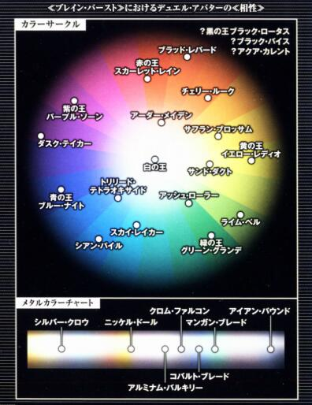

神經連結裝置 科技本質 500分
一個體積0（如開放硬度為3），裝備在頸部的量子接續通訊終端裝置（大小形狀如同頸圈的C字型機械造物）。能夠連線到全球網絡，和腦細胞進行量子規模的無線通訊，能傳送假想的感覺情報到腦部，同時也能消除現實的各種感覺。
此外還有兩種連線方式，有線直連通信 兩人透過XSB線連結通信，而非使用無線方式與所在的網絡服務器進行相互通信。在有線直連的情況下，防護墻的九成都將失去作用，所以直連一般只限親人或戀人。直連的兩人可不必開口，直接透過連接終端進行思考對話； 無線聯機（AD HOC CONNECTION） 能讓多具神經連結裝置不透過伺服器，直接以無線電波聯機，然而在連接速度與安全性方面都不如有線直連，因此基本上沒有人使用。
神經連結裝置在各方面的效果上等同一部電腦及智能通訊設備。由於其操作的便利性，打破了人腦思想與電子數據的隔膜，所以能使使用者如同生理技能般在無受訓下使用電腦技能進行檢定，亦無需因此失去一個成功數（但不視為持有1級電腦技能）。除此之外，使用者在進行電腦檢定獲得+1DP器械加值。本裝置使用太陽能充電，在缺乏光線的環境下最多以低出力，保持基本功能續行72小時（例如這時你用來打擼啊擼一定不夠你擼72小時），以支援意外災禍的搜救工作。另外還有腦訊息認證系統，認證後除非重置所有資料，否則無法交易使用。
Burst Linker 科技本質
不論是凡人還是英雄，庸才還是精英，人心總共有著煩惱丶恐怖丶欲望丶自卑感等負面的情緒。懦弱的人或逃避著它們，或放縱著它們；只有真正內心的堅強才會面對它，跨越它。
本血統源自於輕小說《加速世界》中，指的是一款名為《Brain Burst 2039》的游戲中的玩家。游戲是神經連結裝置的應用程式，軟體的制作者不明，能在以現實世界為藍本重新構筑的虛擬世界中以加速的方式進行對戰的格斗游戲。要成功安裝需要滿足兩個條件，第一個條件是從出生起就經常配戴著神經連結裝置，因此年紀最大的超頻連線者也不過16歲，第二個條件是大腦反應速度。可以說是未來世代的人類專屬血統。而由於游戲本身并無力量，故主神取其核心的理念，通過後未來的量子力學科技，實現出通過人為意志與觀測去改變事象的異能。
Brain Burst 存在一種名為『心意系統』的特殊系統，能使用強烈的意志干涉游戲世界的數據演算，形成空想具現的效果。Burst Linker血統是主神參照此系統的核心程序并改寫，使其能刺激和強化血統持有者的意志力，然後以此意志力改寫現實的事象，變化成對戰虛擬角色并使用虛擬角色的能力。
由於核心是能改寫一切的『心意系統』，游戲本身內置的等級并無意義，故血統等級的劃分改為Rank.I至Rank.V。而對戰虛擬角色所擅長的領域范圍依然按顏色分類：
顏色 特色
紅 遠程攻擊
藍 近距攻擊
黃 間接攻擊
紫 中距攻擊
綠 防守
橙 遠程間接
黑 吸收
白 偏轉
金屬 異常免疫
*中間色：你可以選擇在色盤上介於以上顏色之間的中間色作為你的對戰虛擬角色顏色，如此選擇可使你的角色同時視為最多三個鄰接色系，但如此選擇會令你必須選擇對應色系各自強化最少當前血統支線等級（D1C2B3A4）次（例如你的紫色對戰虛擬角色可同時點取紅丶藍丶紫三色的強化，但升到C級需三色的強化各自最少點取1項；而升到B級則是各自最少2項），你必須在第一次購買血統時決定你是否采用中間色，同時中間色的專屬色系依舊只有一個。

【對戰虛擬角色】
Brain Burst的對戰使用的虛擬角色，玩家在游戲安裝後第一晚的噩夢中，程式進入玩家的深層意識，以玩家的恐怖丶欲望丶自卑感等塑造出對戰虛擬角色，對戰虛擬角色是在噩夢中玩家保護自己的心念產生的。
游戲的角色依特性會有機械丶生物丶流體等各種不同的形態的外型和裝甲。你可以把內心的傷痕按照顏色塑造成【對戰虛擬角色】，并獲得【顏色名】＋【固有名】的【角色名字】（例如白銀之鴉）。色名除了代表對戰虛擬角色的顏色，也同時決定了對戰虛擬角色能力的傾向，固有名則描述對戰虛擬角色的形象。一般色系的角色較常見，金屬色系的角色較少。【對戰虛擬角色】的外形和名字一經選擇後便不可改變。
在【對戰虛擬角色】型態下，你的裝備會自動變化外觀以適應你的角色外型，但其體積丶傷害丶防御等數據不會有變化。
而在你每次獲得或提升血統等級後，將獲得一定數量的升級點數。你可以利用這些升級點數點取【對戰虛擬角色強化樹】內對應你的【對戰虛擬角色】顏色或共通的強化項目，如需判別加值類型，強化項目視為增強加值。這些升級點數在你每次獲得新的升級點數後，第一次回到主神空間（包括於主神空間內強化）時自動重置僅一次。
Rank.I D+600
本強化必須持有神經連結裝置，當神經連結裝置（體積0，硬度3）被破壞時，無法使用描述內帶有【思考加速狀態】或【對戰虛擬角色】關鍵字的能力。
【反應的天賦】
長期與電子訊號的交感，你大腦反應速度異於常人。獲得C級免疫措手不及。
【思考的加速】
你能在任何時候以自由動作喊出『超頻連線（バースト?リンク，Burst Link）』的指令，在Brain Burst程式的作用下進入【思考加速狀態】。【思考加速狀態】下，如有足夠的電子參考資料進行查詢，你在一次智力檢定上獲得+1的器械加值；另外你能利用【思考加速狀態】下充裕的時間考慮行動，故亦可改為在敏捷檢定上獲得+1的洞察加值。而在戰斗開始時，你能使用這能力使你先攻檢定+2洞察加值。
【顯現的心痕】
你能以自由動作消耗1意志，在【思考加速狀態】下不進行技能檢定，改為控制程式選單，解除思考加速狀態并變身成【對戰虛擬角色】，持續一場景。在此等級，你的【對戰虛擬角色】可配置的升級點數為4點。你必須選擇最少1項你的色系專屬強化項目。
Rank.II C+1200
本強化必須持有神經連結裝置，當神經連結裝置（體積0，硬度3）被破壞時，無法使用描述內帶有【思考加速狀態】或【對戰虛擬角色】關鍵字的能力。
【加速的天賦】
你已經習慣在任何意外狀況下迅速進入【思考加速狀態】。你D級獲得的免疫措手不及能力提升為B級，并獲得1級【警覺】專長。
【心痕的認知】
通過觀察【對戰虛擬角色】的外型，你開始了解到自己內心的渴求和傷痕，這如同一道枷鎖一般束縛你——也鍛煉著你。現在你變身成【對戰虛擬角色】仍需消耗1點意志，你的【對戰虛擬角色】可配置的升級點數由4點提升為8點。你必須選擇最少2項你的色系專屬強化項目（含升級）。
特別標注：如果強化本等級血統后，不具有2項你的色系專屬強化項目，這個血統等級的所有效果將被無效，包括提供的升級點數，但是你依然可以分配點數，當你滿足條件后血統生效。
Rank.III B+2400
本強化必須持有神經連結裝置，當神經連結裝置（體積0，硬度3）被破壞時，無法使用描述內帶有【對戰虛擬角色】關鍵字的能力，而【思考加速狀態】能力由於你長期與電子訊號的交感，已經可以在失去程式輔助下以個人意志進入——或許說，你已經用大腦代替電腦記下部分程序的內容并在腦內運行。
【銳化的意識】
長期與電子訊號的交感，你的潛意識對於情報的處理更為敏感，并在危機迫近時給予你警示。你的免疫措手不及能力提升為A級，并獲得【精通先攻】專長。
【時光的沉淀】
你由於【思考加速狀態】，精神上所渡過的時光早已超過你肉體年齡，因此你比同齡人顯得更為老成和智慧，你亦更能善用【思考加速狀態】的『作弊能力』。你現在進入【思考加速狀態】時，智力檢定上獲得的器械加值和敏捷檢定上獲得的洞察加值改為每血統等級1點（AA級視為5），而先攻檢定則改為每血統等級2點（AA級視為5x2=10）。
【心痕的認知】
通過觀察【對戰虛擬角色】的外型，你開始了解到自己內心的渴求和傷痕，這如同一道枷鎖一般束縛你——也鍛煉著你。此能力將永久占用你3點意志上限，但變身時無需再消耗意志，你的【對戰虛擬角色】可配置的升級點數由8點提升為16點。你必須選擇最少3項你的色系專屬強化項目（含升級）。
特別標注：如果強化本等級血統后，不具有3項你的色系專屬強化項目，這個血統等級的所有效果將被無效，包括提供的升級點數，但是你依然可以分配點數，當你滿足條件后血統生效。
Rank.VI A+4800
本強化已無須持有神經連結裝置，你已經能通過個人的意志變成為【對戰虛擬角色】，并且常態保持【思考加速狀態】。
【相對的時間】（雙特性）
長期與電子訊號的交感，似乎已經令你接觸到時間的邊界。在你體感的世界中，你的時間長度似乎與他人相差近一倍。 你的免疫措手不及能力提升為S級，并獲得一個額外的移動動作（僅可用作移動）和一個額外的標準動作（僅可使用非攻擊行動）。
【統一的情報】
你Brain Burst的程式對於你已經失去了實際意義，只馀下一個形式。你現在進入【思考加速狀態】無需再通過指令。而你的大腦已經進化成更快速地處理情報的器官，世間一切知識對你進化後的大腦而言再無界別。
選擇你的學識技能中某個專業，你在學識技能下其余的所有專業合并為該專業，等級取你所有學識技能下所有專業等級之和的八分之一，然后再提升3級。你以該專業進行學識技能的所有檢定。
【創傷的升華】
你已經把自己內心的渴求和傷痕升華成你生活的推進力，於你而言它再不僅是一道創傷，更是你現今作為人之存在的意志體現。或許沒有人能夠給你帶來救續，但你至少可以成為自己的英雄。
現在你變身成【對戰虛擬角色】無需再消耗意志，但此能力將永久占用你3點意志上限，你的【對戰虛擬角色】可配置的升級點數由16點提升為30點。你必須選擇最少4項你的色系專屬強化項目（含升級）。
特別標注：如果強化本等級血統后，不具有4項你的色系專屬強化項目，這個血統等級的所有效果將被無效，包括提供的升級點數，但是你依然可以分配點數，當你滿足條件后血統生效。
Rank.V AA+7200
本強化已無須持有神經連結裝置，你已經常態保持【思考加速狀態】，你的【對戰虛擬角色】已經和你本身再度融為一體。你已認識自我所在，再進一步或許便可如同修仙文明般斬尸成圣，但身處科技文明的你更明白何解人以為人，所以你保留著自身的人性的懦弱與光輝，拒絕成仙成圣。
【超越的意志】（突破天際的鉆頭(X)）
人之所以為人，就因為它的弱小，因為弱小，所以他們才需要勇氣去挑戰強大。甘心為凡人的你放棄了成仙成圣的可能，選擇珍惜自己的弱小，即使混身泥濘，即使因為依據外物而被輕屑，你也不愿意放棄掉人類的軟弱——以及隨之而來的勇氣。
你的意志已經超越了Brain Burst的程式對於你設下的極限——亦是你第一次載入Brain Burst想像【對戰虛擬角色】時自己對自己設下的極限。
當你上一輪在同一個動作消耗過意志值來獲得表現加值，你在本輪中可在同一個動作多消耗1點意志值來獲得額外的獲得表現加值（例如第二輪消耗2點獲得+6DP表現加值，第三輪消耗3點獲得+9DP表現加值，第四輪消耗4點獲得+12DP表現加值，如此類推）。你每次以此能力消耗意志，獲得等同你累積輪數-1的額外表現加值（即第二輪額外+1，第三輪額外+2，第四輪額外+3，如此類推），如你持有鋼鐵意志(2)專長，本能力則改為獲得等同你累積輪數-1後乘4的額外表現加值（即第二輪額外+2，第三輪額外+3，第四輪額外+4，如此類推）。
【神圣的傷痕】
你的【對戰虛擬角色】已經化作一道紋身般的傷痕刻印在你身體的某處（你所自定），傷痕的顏色為你的【對戰虛擬角色】屬性顏色，而圖像則受你的【對戰虛擬角色】固有名（心靈創傷）影響。你現在依然能變身成【對戰虛擬角色】，但除了偽裝成超人外并無實際意義。因為所有強化項目已經與這道【神圣的傷痕】一同化作你存在的一部分。【神圣的傷痕】將永久占用你3點意志上限。
此能力將永久占用你3點意志上限，現在你能分配的升級點數為80點。
【心意的奧秘】
你的意志現在能一定程度上在量子層面上改寫事象，消耗【相對的時間】所獲得的額外動作，你能自選獲得一個價格不高於1個A級特性或無視前置條件（但仍需承受其負面限制）獲得一項總價值不高於2個B級特性的強化（例如一個B級技藝），持續一個場景。你所選的特性或強化無論原本本質為何，在此情況下視為科技本質，因為你只是模仿其能力而非真正獲得它。
【傳承的意志】
在原作《加速世界》中，Brain Burst是一脈單傳地散播開來的游戲，上輩與下輩有著如同家長子女一般的羈絆。在感悟到人之所以為人的意義和意志後，你洞悉到主神空間版的Brain Burst其實也是之前某人的傳承的意志，亦發現他希望你如同小說中的設定般，小心地把火種傳承下去。
本能力使你能以自身的意志制作一個世界內唯一一個的Brain Burst系統。你能把它寄存於任意量子設備中（包括你已不需要使用的神經連結裝置）。當你把此量子設備交予某人，并使其個人認證綁定後，他立即視為強化了D級Burst Linker血統（會正常和其他血統強化沖突），并能在支付7XP後升級為C級血統版本，再支付22XP後則可升級為B級血統版本，其後必須正常購買丶強化或自創。
這個Brain Burst系統每個世界也是唯一一個的，這意味著你可以選擇不把這可有可無的強化交予隊友，而是在前往不同的影片世界中，把這個系統傳承給當中你看中的影片人物，在無限的世界中傳承著人類的意志。
如你把此系統寄存在你的神經連結裝置中并交予影片世界中的人物，你將在回到主神空間時獲得一個全新的神經連結裝置。這是當初給你留下傳承的某人小小的心意，幫助你把新的傳承傳得更廣更遠。
特別標注：如果強化本等級血統后，不具有5項你的色系專屬強化項目，這個血統等級的所有效果將被無效，包括提供的升級點數，但是你依然可以分配點數，當你滿足條件后血統生效。
對戰虛擬角色強化樹：
Brain Burst的對戰使用的【對戰虛擬角色】所持有的特殊能力，使用者能在對戰虛擬角色升級時通過分配升級點數來獲得強化項目，或是消費對應的支線等級和點數購買（亦可按自創技能規則以XP代替支付）。通過升級獲得時，角色不會重覆獲得屬性點（購買血統時已獲得）；而消費支線和點數購買時則會正常獲得屬性點，但獲得的屬性點不會在升級血統時重置，但可以在升級血統時重置消費支線和點數購買的強化項目（這可視為你以支線和點數購買了額外的升級點數，因此此重置不會退回支線和點數，亦不會重置或增減購買技藝時獲得的屬性點）。在血統達AA級前，你無法在變身成【對戰虛擬角色】前應用任何對戰虛擬角色強化。
所有Rank.V的強化項目無法通過升級點數獲得，只能通過支線及點數（或對應的XP）購買。由於Rank.V的強化項目前提前AA級的血統等級，因此無法在升級血統時重置（AA級亦是本血統最高的血統等級），但相對地可正常獲得屬性點。
可選規則：在不開發支線合成的情況下，通過合成獲得高級的共通強化項目，并不會提升角色的屬性上限。
共通：
強化外裝·武器/防具/載具
前置條件：D級Burst Linker
價格：D+500 / 4點升級點數
效果：可重復選擇，每次選擇可獲得一件科技本質的武器/防具/載具，連同附上模版，總兌換價值不可高於500點。這件強化外裝會在你變身成【對戰虛擬角色】時才一同具現出來，或當你血統達A級時化作實物。當你使用自身的強化外裝·武器或載具進行攻擊時，獲得+1DP的器械加值，而強化外裝·防具則改為獲得+1甲防。
特殊：你能選擇一把你已有的武器/防具/載具，轉化為強化外裝，能在變身成【對戰虛擬角色】時應用投資在此強化外裝上的強化改造。這樣你能在升級時重置在其身上的投資的點數，但相對地你除非在升級重置時解除物品與本能力之間連結，否則你在血統達A級前無法在變身前拿出此物品。然而，你無法把生物載具丶智能或生物武器和防具轉化為強化外裝。
說明：你的意志化作武器丶防具或載具，在你顯示自我時伴隨你的身旁。
破甲鋒銳-N
前置條件：強化外裝·武器/強化外裝·載具（需指定載具上一件武器）
價格：D+500 / 4點升級點數
效果：可使一件符合條件的強化外裝，你使用它時破甲提升3點增強加值。
特殊：可重復選擇或購買，但需額外支付一個D級支線。重復選擇後此技能會合成為為破甲鋒銳-R（重置後算作8點升級點數）。
說明：通過與【對戰虛擬角色】的連接，利用想像暫時改變由你的意志具現化之武器的形狀和材質，提升其破甲能力。
破甲鋒銳-R
前置條件：強化外裝·武器/強化外裝·載具（需指定載具上一件武器）
價格：C+1000 / 8點升級點數
效果：可使一件符合條件的強化外裝，你使用它時破甲提升7點增強加值。
特殊：可重復選擇或購買，但需額外支付一個C級支線。重復選擇後此技能會合成為為破甲鋒銳-SR（重置後算作16點升級點數）。
說明：通過與【對戰虛擬角色】的連接，利用想像暫時改變由你的意志具現化之武器的形狀和材質，提升其破甲能力。
破甲鋒銳-SR
前置條件：強化外裝·武器/強化外裝·載具（需指定載具上一件武器）
價格：B+2000 / 16點升級點數
效果：可使一件符合條件的強化外裝，你使用它時破甲提升15點增強加值。
說明：通過與【對戰虛擬角色】的連接，利用想像暫時改變由你的意志具現化之武器的形狀和材質，提升其破甲能力。
中和力場-N
前置條件：強化外裝·武器/強化外裝·載具（需指定載具上一件武器）
價格：D+500 / 4點升級點數
效果：可使一件符合條件的強化外裝，你使用它時破魔提升3點增強加值。
特殊：可重復選擇或購買，但需額外支付一個D級支線。重復選擇後此技能會合成為為中和力場-R（重置後算作8點升級點數）。
說明：通過與【對戰虛擬角色】的連接，把特定頻率的意志力包裹著由你的意志具現化之武器，在接觸時中和目標表面上的異能。
中和力場-R
前置條件：強化外裝·武器/強化外裝·載具（需指定載具上一件武器）
價格：C+1000 / 8點升級點數
效果：可使一件符合條件的強化外裝，你使用它時破魔提升7點增強加值。
特殊：可重復選擇或購買，但需額外支付一個C級支線。重復選擇後此技能會合成為為中和力場-SR（重置後算作16點升級點數）。
說明：通過與【對戰虛擬角色】的連接，把特定頻率的意志力包裹著由你的意志具現化之武器，在接觸時中和目標表面上的異能。
中和力場-SR
前置條件：強化外裝·武器/強化外裝·載具（需指定載具上一件武器）
價格：B+2000 / 16點升級點數
效果：可使一件符合條件的強化外裝，你使用它時破魔提升15點增強加值。
說明：通過與【對戰虛擬角色】的連接，把特定頻率的意志力包裹著由你的意志具現化之武器，在接觸時中和目標表面上的異能。
狂野改裝-N
前置條件：強化外裝·武器/強化外裝·載具（需指定載具上一件武器）
價格：D+500 / 4點升級點數
效果：可使一件符合條件的強化外裝，你使用它時威猛提升3點增強加值。
特殊：可重復選擇或購買，但需額外支付一個D級支線。重復選擇後此技能會合成為為狂野改裝-R（重置後算作8點升級點數）。
說明：通過與【對戰虛擬角色】的連接，利用想像暫時改變由你的意志具現化之武器的體積和材質，使其更為威猛。
中和力場-R
前置條件：強化外裝·武器/強化外裝·載具（需指定載具上一件武器）
價格：C+1000 / 8點升級點數
效果：可使一件符合條件的強化外裝，你使用它時威猛提升7點增強加值。
特殊：可重復選擇或購買，但需額外支付一個C級支線。重復選擇後此技能會合成為為狂野改裝-SR（重置後算作16點升級點數）。
說明：通過與【對戰虛擬角色】的連接，利用想像暫時改變由你的意志具現化之武器的體積和材質，使其更為威猛。
中和力場-SR
前置條件：強化外裝·武器/強化外裝·載具（需指定載具上一件武器）
價格：B+2000 / 16點升級點數
效果：可使一件符合條件的強化外裝，你使用它時威猛提升15點增強加值。
說明：通過與【對戰虛擬角色】的連接，利用想像暫時改變由你的意志具現化之武器的體積和材質，使其更為威猛。
碳纖維相轉移裝甲-N
前置條件：強化外裝·防具/強化外裝·載具
價格：D+500 / 4點升級點數
效果：可使一件符合條件的強化外裝，你使用它時獲得【防彈】及【防能量武器】特性，并使盔甲防御提升1點增強加值。
特殊：可重復選擇或購買，但需額外支付一個D級支線。重復選擇後此技能會合成為為碳纖維相轉移裝甲-R（重置後算作8點升級點數）。
說明：強化改良裝甲的結構和材質，以碳纖維防彈，相轉移涂漆抵御能量，同時提升硬度。
碳纖維相轉移裝甲-R
前置條件：強化外裝·武器/強化外裝·載具（需指定載具上一件武器）
價格：C+1000 / 8點升級點數
效果：可使一件符合條件的強化外裝，你使用它時獲得【防彈】及【防能量武器】特性，并使盔甲防御提升5點增強加值。
特殊：可重復選擇或購買，但需額外支付一個C級支線。重復選擇後此技能會合成為為碳纖維相轉移裝甲-SR（重置後算作16點升級點數）。
說明：強化改良裝甲的結構和材質，以碳纖維防彈，相轉移涂漆抵御能量，同時提升硬度。
碳纖維相轉移裝甲-SR
前置條件：強化外裝·武器/強化外裝·載具（需指定載具上一件武器）
價格：B+2000 / 16點升級點數
效果：可使一件符合條件的強化外裝，你使用它時獲得【防彈】及【防能量武器】特性，并使盔甲防御提升13點增強加值。
說明：強化改良裝甲的結構和材質，以碳纖維防彈，相轉移涂漆抵御能量，同時提升硬度。
意念引擎-N
前置條件：強化外裝·載具
價格：D+500 / 4點升級點數
效果：可使你使用所強化的載具時，其基本速度+15米。
特殊：可重復選擇或購買，但需額外支付一個D級支線。重復選擇後此技能會合成為為意念引擎-R（重置後算作8點升級點數）。
說明：通過與【對戰虛擬角色】的連接，以意志力為助燃劑強化其引擎動力，提升其速度。
意念引擎-R
前置條件：強化外裝·武器/強化外裝·載具（需指定載具上一件武器）
價格：C+1000 / 8點升級點數
效果：可使你使用所強化的載具時，其基本速度+30米。
特殊：可重復選擇或購買，但需額外支付一個C級支線。重復選擇後此技能會合成為為意念引擎-SR（重置後算作16點升級點數）。
說明：通過與【對戰虛擬角色】的連接，以意志力為助燃劑強化其引擎動力，提升其速度。
意念引擎-SR
前置條件：強化外裝·武器/強化外裝·載具（需指定載具上一件武器）
價格：B+2000 / 16點升級點數
效果：可使你使用所強化的載具時，其基本速度+120米。
說明：通過與【對戰虛擬角色】的連接，以意志力為助燃劑強化其引擎動力，提升其速度。
出力解放-R
前置條件：強化外裝·武器/強化外裝·載具（需指定載具上一件武器）
消耗：C+1000 / 8點升級點數
效果：可使一件符合條件的強化外裝，你使用它時傷害提升5L，裝備的力量需求+2。另外，你可以自選是否令裝備的體積+1~2。
特殊：可重復選擇或購買，但需額外支付一個C級支線。重復選擇後此技能會合成為為出力解放-SR（重置後算作16點升級點數）。
說明：進一步開發由你的意志具現化之武器潛藏的性能，使武器更具殺傷力。由於本體是你的意志力所形成，故必須通過與【對戰虛擬角色】的連接才能解放出來。
出力解放-SR
前置條件：強化外裝·武器/強化外裝·載具（需指定載具上一件武器）
價格：B+2000 / 16點升級點數
效果：可使一件符合條件的強化外裝，你使用它時傷害提升10L，裝備的力量需求+5。另外，你可以自選是否令裝備的體積+1~5。
說明：進一步開發由你的意志具現化之武器潛藏的性能，使武器更具殺傷力。由於本體是你的意志力所形成，故必須通過與【對戰虛擬角色】的連接才能解放出來。
抵沖夾層-R/絕能夾層-R
前置條件：強化外裝·防具/強化外裝·載具
消耗：C+1000 / 8點升級點數
效果：選擇可使一件符合條件的強化外裝，你使用它時物理傷害吸收/全能量抗力提升2點。
特殊：可重復選擇或購買，但需額外支付一個C級支線。重復選擇後此技能會合成為為抵沖夾層-SR/絕能夾層-SR（重置後算作16點升級點數）。
說明：以想像在裝甲內加設一個特殊材質夾層，用以吸收物理沖擊或能量滲透。
抵沖夾層-SR/絕能夾層-SR
前置條件：強化外裝·武器/強化外裝·載具（需指定載具上一件武器）
價格：B+2000 / 16點升級點數
效果：可使一件符合條件的強化外裝，你使用它時物理傷害吸收/全能量抗力提升5點。
說明：以想像在裝甲內加設一個特殊材質夾層，用以吸收物理沖擊或能量滲透。
反重力裝置-X
前置條件：強化外裝·載具
消耗：C+1000 / 8點升級點數
效果：使載具獲得等同于其基礎移動速度的飛行速度，其機動性為完美。
說明：加裝能生成反重力力場的裝置於載具上，用以抵消引力實現飛行。
技能強化輔助元件-X
前置條件：無
消耗：B+2000 / 16點升級點數
效果：你每輪獲得等同你血統等級的額外迅捷動作，只能用於發動血統或血統屬下技能樹相關能力。
說明：優化【對戰虛擬角色】的輔助介面處理程序，從而令使用者更迅速地完成【對戰虛擬角色】的操作。
紅：
殲滅炮臺I
前置條件：D級Burst Linker
價格：D+500 / 4點升級點數
效果：當你進行短點射丶長點射丶連射或火力壓制時，你能使用力量代替敏捷進行射擊技能的攻擊檢定。
特殊：在購買或點選本技能時，你能選擇把效果替換為「你能使用力量代替智力進行火炮的攻擊檢定」。這時為本項強化項目的一個同名的不同能力，故能重覆購買或點選一次以同時獲取兩項效果。
說明：相較於精準的射擊，你傾向使用最大的火力把目標壓制下去，甚至徹底殲滅。你的【對戰虛擬角色】能連接你的槍械，只要你能承受其沖擊力便可以無限強化其火力極限。故然你并非作為一個射手，而是作為一名搬運工和抵御後座力的支柱去驅使你的槍械。
掃蕩槍手I
前置條件：D級Burst Linker
價格：D+500 / 4點升級點數
效果：當你進行長點射丶連射或火力壓制時，你能挑選不多於你敏捷及射擊上的附加成功數量的單位，把他們從攻擊中剔除。
特殊：在購買或點選本技能時，你能選擇把效果條件替換為「當你進行火炮攻擊時」，附加成功數量的關鍵屬性以智力取代敏捷，并把本強化項目名稱修改為「支援炮手I」。這時為本項強化項目的一個變體能力，故不能重覆購買或點選以同時獲取兩項效果。
說明：你深深了解在戰場上互相配合的重要，并把自身定位於火力支援的位置上。你的【對戰虛擬角色】能連接你的槍械，把槍械的運動訊息如同肢體一般化作神經脈沖傳至你的大腦，使你能如若臂使地控制槍械發射出精確的彈幕，壓制敵人的同時為友方創造機會。
狙擊死神I
前置條件：D級Burst Linker
價格：D+500 / 4點升級點數
效果：通過一個迅捷動作，你在射擊技能的攻擊檢定上獲得9加骰。
特殊：在購買或點選本技能時，你能選擇把效果替換為「以感知取代敏捷進行射擊攻擊檢定」。這時為本項強化項目的一個同名的不同能力，故能重覆購買或點選一次以同時獲取兩項效果。
說明：你對於槍械最深的印象就是一擊必殺的狙擊，你認為收割生命無需使用第二發子彈。你的【對戰虛擬角色】能連接你的槍械，把環境丶距離和你的身體狀況等影響射擊精確度的參數顯示到你的「介面」前，輔助你穩定射擊線，作出精確的狙擊。
殲滅炮臺II
前置條件：C級Burst Linker，「殲滅炮臺I」
價格：C+1000 / 8點升級點數
效果：當你觸發「殲滅炮臺I」效果時，你能通過一個迅捷動作，如同接觸攻擊一般忽視目標的護甲和天生防御。
說明：護甲？這東西在你用重火力所傾瀉而出的狂暴沖擊之下，就如同紙漿一般無力。
掃蕩槍手II
前置條件：C級Burst Linker，「掃蕩槍手I」
價格：C+1000 / 8點升級點數
效果：你能把射擊變為半徑5米的AOE，目標需以反射檢定減免傷害，但是范圍攻擊中如有重疊的區域，則只計算第一次范圍攻擊的傷害。
特殊：本能力能忽視條件觸發掃蕩槍手I的效果（即無需短點射亦可觸發）。
說明：上天入地的彈幕籠罩了局部的戰場，使敵人難以防備。
支援炮手II
前置條件：C級Burst Linker，「支援炮手I」
價格：C+1000 / 8點升級點數
效果：你能把射擊范圍擴大半徑10米，并對范圍內所有你所剔除的單位提供少部分掩護，即2點掩蔽防御。此掩蔽防御不與其他來源疊加。
說明：連綿的支援火炮不只壓制了局部戰場，更為友軍的進攻提供了掩護。
狙擊死神II
前置條件：C級Burst Linker，「狙擊死神I」
價格：C+1000 / 8點升級點數
效果：能通過一個迅捷動作，你在射擊技能的攻擊檢定上獲得8加骰。另外你獲得D級反偵測等級。
說明：所謂狙擊，就只有命中要害與落空的區別。所謂死神，總是從意想不到的地方出現。你的【對戰虛擬角色】現在能把環境丶距離和你的身體狀況等影響射擊精確度的參數直接化作訊號傳入你的大腦，并且進化出光學迷彩外殼。
殲滅炮臺III
前置條件：B級Burst Linker，「殲滅炮臺II」
價格：B+2000 / 16點升級點數
效果：當你觸發「殲滅炮臺II」效果時，你能以移動動作選擇性追加11點高速/威猛/破魔（三選一）。
說明：為了更有效地用強大的火力碾死對手，你能通過【對戰虛擬角色】即場改造你所發射的彈藥，靈活地使用特殊彈藥瓦解目標的抵抗。
掃蕩槍手III
前置條件：B級Burst Linker，「掃蕩槍手II」
價格：B+2000 / 16點升級點數
效果：你在射擊技能的攻擊檢定上獲得8加骰。當你觸發「掃蕩槍手II」效果時，你攻擊附帶等同于成功數的糾纏點數，持續一輪（持續至下輪你的回合開始時）。這種臨時的糾纏點數并不會造成嚴重後果。
說明：你精湛的槍法支配了局部的戰場，在打擊敵人的同時，限制了他們的戰術走位，使敵人只能在你的槍聲下按你的意志而起舞。
支援炮手III
前置條件：B級Burst Linker，「支援炮手II」
價格：B+2000 / 16點升級點數
效果：你能把射擊范圍再擴大半徑10米，并對范圍內所有你所剔除的單位提供大量掩蔽（5點掩蔽防御）。此掩蔽防御不與其他來源疊加，如不持有「支援炮手II」，掩蔽效果下降為部分掩蔽（5點掩蔽防御）。
說明：你現在的支援火炮已經能壓制一個小型陣地，精確的炮擊更為友軍的進攻提供更強的掩護。
狙擊死神III
前置條件：B級Burst Linker，「狙擊死神II」
價格：B+2000 / 16點升級點數
效果：你獲得B級反偵測等級。并能把「狙擊死神II」的D級反偵測等級效果替換為忽視射擊上附加成功的部位減值。
說明：你如同戰場上的幽靈一般被人所忽視，而你的子彈則會告訴你的目標——死神來了。
殲滅炮臺IV
前置條件：A級Burst Linker，「殲滅炮臺III」
價格：A+4000 / 32點升級點數
效果：當你觸發「殲滅炮臺II」效果時，你能以移動動作選擇性追加11點高速丶威猛及破魔。你亦可選擇把三項特性中任意一項轉化為另外兩項中的任意一項。（例如你可以選擇追加11點高速和22點威猛丶22點高速和11點破魔，如此類推）
說明：你的即興改造現在更為熟練，通過靈活使用你的特殊彈藥幾乎可以瓦解絕大部分的抵抗。
掃蕩槍手IV
前置條件：A級Burst Linker，「掃蕩槍手III」
價格：BB+3000 / 24點升級點數
效果：當你觸發「掃蕩槍手III」效果時，你攻擊附帶的異常點數追加耳鳴丶目眩及暈眩點數，持續一輪（持續至下輪你的回合開始時）。這些臨時的異常點數并不會造成嚴重後果。
說明：閃光丶爆震丶電磁……你的掃蕩打射擊混入了各式各樣通過你的意志而改造的特殊量子彈藥，全方位多方面的打擊摧殘著敵人的身心。
支援炮手IV
前置條件：A級Burst Linker，「支援炮手III」
價格：BB+3000 / 24點升級點數
效果：你可以在你攻擊中附帶等同于成功數的瓦解點數。瓦解點數視為異常狀態，以強韌對抗，每3點瓦解點數會扣減1點目標的DR與傷害吸收的總合，順序為DR>穿刺傷害吸收>揮砍傷害吸收>鈍擊傷害吸收>物理傷害吸收>全傷害吸收。當你對建筑物進行攻擊時，可忽略攻擊范圍把整座建筑物視為一個單體目標進行攻擊，以此方式進行攻擊，你視為進行一次單體攻擊，并不會直接波及到建筑物內的單位。
說明：挖掘機技術哪家強，Burst Linker支援炮。今天起，你的名字叫作遷·拆·辦。
狙擊死神IV
前置條件：A級Burst Linker，「狙擊死神III」
價格：BB+3000 / 24點升級點數
效果：你能以自由動作把自身轉化為虛體，或使你的攻擊獲得額外14L的傷害增強。
說明：你能量子化自身使自身轉化為虛體，回避絕大部分的攻擊，或是把自身意志化作量子貫注入子彈之中射出。
殲滅炮臺V/掃蕩槍手V/支援炮手V
前置條件：AA級Burst Linker，「殲滅炮臺IV」/「掃蕩槍手IV」/「支援炮手IV」
價格：AA+6000
效果：以一個整輪動作，你能使用所有你能操控的槍械進行一次攻擊，把它們的傷害累加視為一件武器，所有特性取高并并存，對正面扇形半徑320米內所有單位進行一次攻擊，并且每使用一件武器，便可獲得+3DP的器械加值（視為已使用連射）。
說明：全力全開，全彈發射，還有什麼好說明的？剛正純樸，吃我大Ｏ啦！
狙擊死神V
前置條件：AA級Burst Linker，「狙擊死神IV」
價格：AA+6000
效果：以一個整輪動作，你把自身化作子彈射出，這如同進行一次正常的射擊技能的接觸攻擊檢定，但結束後你會按子彈的軌跡移動至射程內任意一點。如你不持有【超級貫穿】或【幽冥】，發動此能力時視為持有它們。其後你能大概定位剛才命中的目標，并在敏感范圍內準確定位他，即使他不在你的探知范圍內或有視線遮擋，直至他死亡或你定位另一名目標。
說明：你能把自身化作量子，形成子彈射出，并在擊中敵人時留下一絲自身的量子情報，用以感應目標的位置。
藍：
一擊必殺I
前置條件：D級Burst Linker
價格：D+500 / 4點升級點數
效果：當你使用體型值不少於[你自身的體型值-2]的白刃武器時，你在使用此武器進行的攻擊檢定獲得+4DP士氣加值。
說明：你喜歡使用巨大的武器作出威力巨大的一擊，因此你在使用這類型武器更具主觀能動性。
二天一流I
前置條件：D級Burst Linker
價格：D+500 / 4點升級點數
效果：你能使用敏捷代替力量進行武技技能的攻擊檢定。當你持用兩把白刃武器時，你能在攻擊上獲得1DP技藝加值，在防御上獲得1點掩蔽加值。
效果：如你已能使用敏捷代替力量進行武技技能的攻擊檢定，以上加值提升至2。
說明：你認為使用兩把的武器較使用一把武器更為靈活和平衡，你初步掌握了使用雙武器進行攻守兼俱的戰術。
一擊必殺II
前置條件：C級Burst Linker，「一擊必殺I」
價格：C+1000 / 8點升級點數
效果：當你使用體型值不少於[你自身的體型值-2]的白刃武器時，你在使用此武器進行的攻擊檢定獲得運動上的附加成功作為士氣加值。
說明：你掌握了如何使用身體的協調性，發揮全身的力量揮動你的武器。
二天一流II
前置條件：C級Burst Linker，「二天一流I」
價格：C+1000 / 8點升級點數
效果：當你持用兩把白刃武器時，你能在攻擊上以敏捷取代力量影響傷害上限。當你受到攻擊時，你能以一個反射動作進行格檔，如果你這樣做，你將失去下輪的一個標準動作。
說明：在研究如何做用雙武器發揮攻守兼俱效果的戰術上，你開始能心分二用，一手主攻，一手主防。
一擊必殺III
前置條件：B級Burst Linker，「一擊必殺II」
價格：B+2000 / 16點升級點數
效果：你能以一個標準動作跳起再進行一次白刃攻擊，其攻擊成功數轉化為15米內的范圍傷害，反射減免。如此次攻擊的跳躍高度會造成墜落傷害，你能把墜落傷害如同你的武器傷害加進攻擊檢定中。
說明：傳說中的大·跳·斬，威武霸氣上檔次。通過重力加強攻擊威力，并產生強大的風壓沖擊波傷害附近的敵人。
二天一流III
前置條件：B級Burst Linker，「二天一流II」
價格：B+2000 / 16點升級點數
效果：當你持用兩把白刃武器時，你能在其中一把進行攻擊後，以另一把武器進行追擊。這視為額外獲得一個只能用於攻擊的標準動作，但可以作為「二天一流II」的代價。
說明：在達到以雙武器發揮攻守兼俱的效果後，你轉而利用心分二用的技巧，使用兩把不同的武器同時作出有效的攻擊。
一擊必殺IV
前置條件：A級Burst Linker，「一擊必殺III」
價格：BB+3000 / 24點升級點數
效果：當你使用體型值不少於[你自身的體型值-2]的白刃武器攻擊時，你能以迅捷動作選擇性追加30點高速/威猛/破魔。（三選一）
說明：你的攻擊專注於以力壓人，還能通過意念強化來瓦解敵人的抵抗。
二天一流IV
前置條件：A級Burst Linker，「二天一流III」
價格：BB+3000 / 24點升級點數
效果：當你進行攻擊時，你能使攻擊附帶等同于成功數的惡心及劇痛點數。
說明：在達到以雙武器心分二用進行連擊的效果後，你開始把個人的意志附在刀刃上，在攻擊時侵入敵人身體，如同引起其不適。
一擊必殺V
前置條件：AA級Burst Linker，「一擊必殺IV」
價格：AA+6000
效果：消耗一個移動動作，你能在一輪內對你所攻擊目標進行對抗檢定，以你的武技技能檢定對抗對方的生存技能檢定（專業：強韌），如你勝出將可忽視對方在接下一輪中忽視目標任意一項你所指定的防御。對方求生技能的關鍵屬性取決於你所指定的防御類型，基本防御為敏捷，洞察防御為感知，掩蔽防御為沉著，盔甲防御為耐力，格擋防御為力量，力場防御為決心，偏斜防御為操控，其他防御類型如無列於此處則由ST判定。
特殊：如你的攻擊目標多於一人，你必須選擇同一項防御對所有目標進行對抗檢定。如你的攻擊次數多於一次，你可以攻擊相目標再次進行不同防御類型的對抗檢定，但新的防御類型忽視效果會取代舊的防御類型忽視效果。
說明：速斬丶無念斬丶蛇斬丶斷鋼斬丶重斬丶振蕩斬……你的攻擊收發由心，能隨心所欲地使用最合適的方式瓦解對手的防御。
二天一流V
前置條件：AA級Burst Linker，「二天一流IV」
價格：AA+6000
效果：你獲得「二天一流III」第二次的追擊的白刃攻擊。你能以自由動作令你的白刃攻擊獲得20DP的士氣加值，其後你能以自由動作在一次攻擊前主動扣減32DP攻擊，使你額外獲得一個用於白刃攻擊的標準動作，這個減值持續一輪并會累加。（例如你的白刃攻擊檢定在扣去目標防御後為65DP，那你則可以扣去32DP，進行兩次33DP的標動白刃攻擊，而第二次33DP的白刃攻擊亦可以扣除32DP，改為進行兩次1DP的標動白刃攻擊。）
說明：Motto，Hayaku！（更多，更快！）你在喊出這句臺詞時，似乎一瞬間與一名黑衣劍士同在，於是你使用出傳說中的星爆氣流斬——的劣化版——星爆棄療斬。你能憑著意氣盲目加快揮動你的武器，然而如此瘋狂的代價是你的攻擊精準度插水式下降。
黃：
光學暗示I
前置條件：D級Burst Linker
價格：D+500 / 4點升級點數
效果：你獲得等同你風度上附加成功數量的偏斜防御。
說明：你的【對戰虛擬角色】能一定程度上控制光線的折射，誤導別人眼中你的位置。
光學暗示II
前置條件：C級Burst Linker，「光學暗示I」
價格：C+1000 / 8點升級點數
效果：你獲得一種新的攻擊方式【光學毒】，檢定方式為風度+表達，你需為此攻擊方式選擇一項表達專業，但除了技能重置外不可更改。同時你獲得基本的【光學毒】—【迷幻】。使用【迷幻】需要消耗標準動作和1點意志，并能對2米內一名目標進行對抗檢定，以你的【光學毒】檢定對抗其意志，造成等同你勝出成功數的魅惑點數。
說明：你掌握了通過光線頻率對他人進行精神暗示的技術，你能通過光線慢慢使人對你言聽計從。
光學暗示III
前置條件：B級Burst Linker，「光學暗示II」
價格：B+2000 / 16點升級點數
效果：你獲得三種的【光學毒】—【靜默】丶【幽暗】丶【蛇縛】，分別造成耳聾丶目眩和精神束縛三種異常狀態點數，檢定方式如同【迷幻】。而現在你的【光學毒】改為對5米扇形內你所選擇的單位造成影響。
說明：通過光線頻率對他人進行精神暗示，你能遮斷其五感。
光學暗示IV
前置條件：A級Burst Linker，「光學暗示III」
價格：BB+3000 / 24點升級點數
效果：你獲得一種高級的【光學毒】—【刺激】，能造成任意一種情緒異常的異常狀態點數，檢定方式如同【迷幻】。此外，你的風度檢定獲得8加骰，現在你的【光學毒】提升為對25米扇形內你所選擇的單位造成影響。
說明：通過光線頻率對他人進行精神暗示，你能引發其大腦自行生成最能觸動其心情的幻覺，影響其情緒。
光學暗示V
前置條件：AA級Burst Linker，「光學暗示IV」
價格：AA+6000
效果：你現在使用【光學毒】能對150米扇形內你所選擇的單位造成影響，目標依然以意志進行對抗，但會先造成【迷幻】的魅惑點數，然後附加同等數量你所選擇的任意異常狀態，但所有目標必須選擇同一種異常狀態。
說明：你是使用光學暗示的催眠大師，能廣域地對生物下達暗示，并令其深信他處於你所描繪的困境。
紫：
永恒之槍I
前置條件：D級Burst Linker
價格：D+500 / 4點升級點數
效果：你獲得1級暗器大師專長。如你已獲得此專長，或在選取此強化項目後追加3XP，你獲得一個10立方米的儲存空間，只能用於儲存投擲物品。向空間中放入物品是一個移動動作。取出單手可以投擲的武器是一個迅捷動作，取出便攜暗器是一個自由動作，取出雙手投擲的武器是一個整輪動作。如果被攻擊的目標并未意識到儲存空間的存在，你從儲存空間取出武器進行攻擊時，目標視為措手不及（D級）。
說明：無數的暗器和投擲物收藏於你的【對戰虛擬角色】裝甲下的偏折空間內，你能如同機械人一般迅速從裝甲下彈出武器，對敵人發動措手不及的突襲。
永恒之槍II
前置條件：C級Burst Linker，「永恒之槍I」
價格：C+1000 / 8點升級點數
效果：現在你可以把儲存空間視為強化外裝·武器進行通用強化，但只能為儲存空間強化等同你血統等級低一級的通用強化。這并不會使你的儲存空間變成武器，而是當你從儲存空間拿出并即時投擲的武器時，視為拿出的武器獲得對應的強化。現在被攻擊的目標并未意識到儲存空間的存在，你從儲存空間取出武器進行攻擊時，目標視為措手不及（C級），而目標意識到儲存空間的存在後第一輪內依視為措手不及（D級）。你的投擲攻擊在攻擊措手不及中的目標時，對方需用強韌對抗而非正常防御。
說明：通過【對戰虛擬角色】與儲存空間的連系，你的力量能傳導至儲存空間內的投擲物上，使其在和你持續連接下構造暫時獲得強化。
永恒之槍III
前置條件：B級Burst Linker，「永恒之槍II」
價格：B+2000 / 16點升級點數
效果：現在被攻擊的目標并未意識到儲存空間的存在，你從儲存空間取出武器進行攻擊時，目標視為措手不及（B級），而目標意識到儲存空間的存在後第一輪內依視為措手不及（C級），第二輪視為D級。現在你的投擲檢定獲得8加骰。
說明：通過【對戰虛擬角色】的輔助界面和系統，你現已掌握了出神入化的投擲技巧。如果能拋開心障，即使你不使用【對戰虛擬角色】的輔助也是一名投擲好手。
永恒之槍IV
前置條件：A級Burst Linker，「永恒之槍III」
價格：BB+3000 / 24點升級點數
效果：你在投擲攻擊檢定上額外獲得你運動技能等級的DP，作為速度加值。
說明：你在投擲上的精研已反樸歸真，唯快狠準而已。你所投擲出的武器，速度甚至超越導彈。你獲得「人形導彈發射器」的雅稱。
永恒之槍V
前置條件：AA級Burst Linker，「永恒之槍IV」
價格：AA+6000
效果：你的投擲攻擊獲得AA級反偵測等級。
說明：你的投擲攻擊已然快到極至，當你投出武器的同時，目標便已經被擊中，或許只有配載超越量子級的超級電腦的偵測設備，才能在那剎那間捕捉到你投擲的軌跡。
綠 防守 白刃
不落鐵壁I
前置條件：D級Burst Linker
價格：D+500 / 4點升級點數
效果：你獲得1點快速治療【醫療點12】。
說明：你信念堅定，難以被擊倒。即使受到嚴重的傷害，你的強烈生存意志在通過【對戰虛擬角色】的強化後，也會促進你身體快速進行超自然等級的自我恢復。
不落鐵壁II
前置條件：C級Burst Linker，「不落鐵壁I」
價格：C+1000 / 8點升級點數
效果：受到攻擊時，你能以反射動作把你身上的基礎防御及閃避防御取半轉化為格擋防御，或把你身上的護甲防御及天生防御取半轉化為掩蔽防御，持續一輪。
說明：你掌握了如何在遇上針對性的攻擊時能迅速反應揚長避短，當閃避失去意義時便以閃避的速度進行格檔反應，當裝甲失去意義時便暫時脫落作金蟬脫殼。
不落鐵壁III
前置條件：B級Burst Linker，「不落鐵壁II」
價格：B+2000 / 16點升級點數
效果：受到攻擊時，你能以反射動作把你身上的偏斜丶力場和能量防御取半轉化為護甲防御上的增強加值，或把你身上的格擋防御和洞察防御取半轉化為閃避防御，持續一輪。現在你每輪可使用的反射動作次數等同你敏捷和感知上的附加成功取低，當你花光每輪所有反射動作次數時，你才會失去下輪的迅捷動作。額外獲得的反射動作只能用來進行基礎規則中允許的行為。
說明：你意志堅定，臨危不亂，在刀光劍影之間依然能冷靜地盡量對所有攻擊進行應對。此外你更精進了你的防護技巧，當能量護罩失去意義時便以能量增強護甲，當攻擊無法攔截的話便果然全力閃躲。
不落鐵壁IV
前置條件：A級Burst Linker，「不落鐵壁III」
價格：BB+3000 / 24點升級點數
效果：你的快速治療提升為4點【醫療點36】，并獲得等同你耐力上附加成功的天生防御。每輪一次，在一名在你單次移動距離內的友方單位受到攻擊時，你能以一個反射動作迅速來到他身前替他擋下這次攻擊。特殊的，如果這是一個范圍傷害，你能通過放棄進行對抗檢定使此名友方單位視為獲得完全掩蔽。
說明：在長期通過生存意志干預之下，你的肉體開始往更具生存優勢的方向進化。而在自身的生存得以確保後，你終於注意到身邊其他友好的生命，理解到如何以自身的強壯保護他人。
不落鐵壁V
前置條件：AA級Burst Linker，「不落鐵壁IV」
價格：AA+6000
效果：現在你能以「不落鐵壁IV」代替友方承受傷害的次數及你每輪可用的反射動作次數提升2次。每次你使用反射動作應對一名單位對你所進行的攻擊時，你能額外消耗一個反射動作獲得20點洞察防御，持續1輪。
說明：經歷無數戰場，你未曾一勝，亦未曾一敗。你或許不能擊倒敵人，但無數次面對攻擊下專注防御的經歷，使你總能一眼看穿他人攻擊的脆弱點，在其威力未盛前先行攔截下來。
橙：
拂曉之光I
前置條件：D級Burst Linker
價格：D+500 / 4點升級點數
效果：通過一個標準動作，你能使3米內的一名友方單位獲得1點快速治療【醫療點12】。
說明：你的意志承載著一種小小的希望種子，你通過祈愿散播這種小小的希望，刺激其生存的意志。
拂曉之光II
前置條件：C級Burst Linker，「拂曉之光I」
價格：C+1000 / 8點升級點數
效果：取代「拂曉之光I」，你能進行一次感知+求生+專業：醫療攻擊檢定，使10米內的一名友方單位獲得治療，你每2個成功數可使其治療1點沖擊或嚴重傷害，每3個成功數可使其治療1點惡性傷害。這屬於一種新建攻擊，故需使用標準動作，并且不能使用血統附送的標準動作來施展，且被攻擊的人不能放棄防御也不能讓你宣言致死，必定會取被攻擊者應有的最高防御生效，這一攻擊也不能使用豁免替換被攻擊者的防御【醫療點36】。
說明：希望的種子已經發芽，并且與你的【對戰虛擬角色】連通。通過【對戰虛擬角色】的調節和增幅，不再是單純誘發他人生存的意志，而是以你的希望與他人同調并感染他，使其生存的意志更為強烈，并以這種意志力量引擎身體的自愈。
拂曉之光III
前置條件：B級Burst Linker，「拂曉之光II」
價格：B+2000 / 16點升級點數
效果：你能把「拂曉之光II」檢定的附加成功等量之DP數加進你「拂曉之光II」檢定中，這屬於技藝加值。在計算完其他效果之后，再計算本招式的效果。此外，你的治療能同時作用在目標為中立半徑5米內所有的友方單位【醫療點36】。
特殊：在DP計算過程中增加附加成功的特殊能力不會被計算入內，如同將技：一擊。
說明：最能感動人心的只有真誠，你現在能在希望的感染中傳遞誠摯的祝福，使希望之光更為溫暖人心。此外，你的【對戰虛擬角色】處理能力現已足以同時把你的思念與局部范圍內的人同時分別同調。
拂曉之光IV
前置條件：A級Burst Linker，「拂曉之光III」
價格：BB+3000 / 24點升級點數
效果：通過一個迅捷動作，你可以在進行「拂曉之光II」的治療時，以每2個成功數治療任意一種異常點數1點取代傷害治療，你必須在進行治療前選擇一種異常狀態為目標。同時，你能將學識及洞察上的附加成功加進醫治檢定中，這是一個修行加值【醫療點36】。
說明：在無數次的同調下，你分享了他人的傷痛，也明白到存在著比生死更令人痛苦的病痛。因此你不再只懂得傳遞單一的生存祝福，還能傳遞出克服困境的鼓勵，甚至能促使細胞分裂令斷肢重生。為此，你研究了大量生物知識，配合臨床的敏銳感應，更為有效和針對地進行醫療。
拂曉之光V
前置條件：AA級Burst Linker，「拂曉之光IV」
價格：AA+6000
效果：現在你能在治療時同時治療一種異常點數，運作方式如同「拂曉之光IV」，你仍然能同時發動「拂曉之光IV」，這會使你同時治療兩種異常狀態。此外，你的醫治檢定獲得24DP神圣加值【醫療點36】。
說明：長久的醫療經歷使你累積到無數的感謝，這些感激全化作你意志的糧食，更你救死扶傷的意志更為強烈。現在你已能在拯救生命的同時撫平他的痛苦，治本同時治標。
黑：
深沉之黑I
前置條件：D級Burst Linker
價格：D+500 / 4點升級點數
效果：你獲得1點全傷害吸收。
說明：你的心靈沉沒在一片漆黑的天地，而作為你心靈投影的【對戰虛擬角色】裝甲因此得到了吸收能量的物理特性——無論是熱能丶動能丶電能或是其他任何性質的能量。
深沉之黑II
前置條件：C級Burst Linker，「深沉之黑I」
價格：C+1000 / 8點升級點數
效果：你的全傷害吸收提升為2點。強化時選擇揮砍丶穿刺或鈍擊任意一種，你獲得所選擇的類型DR2點，并且你獲得2點防破甲。
說明：你放任心靈繼續沉淪，并對觸碰你內心的人架起拒絕的外殼。這種種心念顯化成你【對戰虛擬角色】的物理特性。
深沉之黑III
前置條件：B級Burst Linker，「深沉之黑II」
價格：B+2000 / 16點升級點數
效果：你的全傷害吸收提升為3點。現在你的DR提升為4/-，并且你的防破甲提升到4點。
說明：你心靈的黑暗化作一片海洋。這種種心念的變化強化了你【對戰虛擬角色】那拒絕并吸收一切的矛盾物理特性。
深沉之黑IV
前置條件：A級Burst Linker，「深沉之黑III」
價格：BB+3000 / 24點升級點數
效果：你的全傷害吸收提升為8點。現在你的DR提升為6/-，并且你的防破甲提升到8點。
說明：你心靈的黑暗化作卷起了漩渦，如同黑洞一般，并進一步強化了你【對戰虛擬角色】那拒絕并吸收一切的矛盾物理特性。
深沉之黑V
前置條件：AA級Burst Linker，「拂曉之光IV」
價格：AA+6000
效果：你的防破甲提升到24點。當你進行了一次攻擊檢定後，你能選擇直接應用結果，或把結果轉化為表現加值重擲一次，你一輪只能以此方式重擲一次。
說明：黑洞最終濃縮成奇點，然後爆炸，炸出無數的星辰，使你心靈化作一片宇宙。你依然拒絕并吸收一切，但你不再只被動承受，每當你決意行動時，你心靈的宇宙便會重演爆炸，引動巨大的意念為你改寫事象因果。
白：
無形之白I
前置條件：D級Burst Linker
價格：D+500 / 4點升級點數
效果：你獲得等同你操控上附加成功的偏斜防御。
說明：白色是一切顏色，白色的你深信你就是一切的掌控者，這種意志顯現成一種偏轉力場，保護著你免受冒犯。
無形之白II
前置條件：C級Burst Linker，「無形之白I」
價格：C+1000 / 8點升級點數
效果：你的操控檢定獲得9加骰。你能在強化此項目時選擇一種攻擊方式，你能把操控視為它的關鍵屬性進行檢定。
說明：你的意志和信念通過【對戰虛擬角色】的增幅化為強烈的自信自尊，使你更為得心應手地操控事物。
無形之白III
前置條件：B級Burst Linker，「無形之白II」
價格：B+2000 / 16點升級點數
效果：你的操控檢定獲得8加骰。每輪一次，你能以反射動作在你回合外進行一次移動，這移動可使你離開他人的攻擊范圍，但僅限先攻順序比你低的單位。而如對方此次攻擊的目標僅有你一人，他可以使用本輪馀下的移動力跟上你的移動繼續進行攻擊，如果對方因此能力而無法攻擊你（同樣當目標僅有你），視為他沒有使用此攻擊動作，他仍可重新指定另一目標或使用其他攻擊，但其他已進行的行動（如移動或迅捷強化等）并不會回溯。
說明：一次次得心應手地操控事物反過來更堅定了你的意志和信念，形成良性的循環。你的驕傲使你開始運用你過人的神經反應速度，配合【對戰虛擬角色】輔助系統玩弄冒犯你的人。
無形之白IV
前置條件：A級Burst Linker，「無形之白III」
價格：BB+3000 / 24點升級點數
效果：你的防御獲得你操控上附加成功，這視為偏斜防御。每次進行轄免檢定時，你能消耗1點意志使你的三項豁免獲得你風度上附加成功，這視為機運加值。
說明：你自信自尊的意志更為壯大，你就如同「驕傲」所化為身的異物。他人的攻擊會受你意志而偏轉，你的意志和威儀甚至能提升你存在的維度，影響所謂的運氣，一切對你精神和肉體的直接或間接干涉都會在無形中版看不見的運氣所阻礙。
無形之白V
前置條件：AA級Burst Linker，「無形之白IV」
價格：AA+6000
效果：你能通過自由動作消耗1點意志，在一輪內獲得10點升級點數，這些升級點數能點選任意色系的對戰虛擬角色強化樹，黑色和金屬色除外。
說明：你自信是一切的掌控者，因此你能擁有一切，所謂的色系特性不過是白光內的其中一種顏色。你的意志能抽取出你心靈特性中代表某種特質的顏色，并暫時顯化出來。然而，那承受和拒絕一切的黑是與你如此對立，那別於一般色系的金屬色系更是作為特異的存在，只有這兩種性格特質你是無法提取的。
金屬：
金屬之翼I
前置條件：D級Burst Linker
價格：D+500 / 4點升級點數
效果：以一個迅捷動作使用，消耗1點意志，你獲得等同基礎速度的飛行速度，機動性為普通，持續一場景。
說明：你對天空的向使你的【對戰虛擬角色】獲得一對翅膀，你能以飛翔的愿望驅動它。
金屬之翼II
前置條件：C級Burst Linker，「金屬之翼I」
價格：C+1000 / 8點升級點數
效果：你獲得1種你所選擇的能量抗力，數量等同你耐力上的附加成功。你獲得2種D級異常狀態免疫，如相關異常狀態存在子項，你必須選擇一項子項。當你在飛行中進行移動後攻擊時，你獲得2DP速度加值。
特殊：你所選擇的能量抗力必須符合你所選擇的金屬色物理特性，而且需在選擇【對戰虛擬角色】決定，即使重置升級點數亦不能重選另一種能量抗力和異常狀態免疫。
說明：你的金屬色特質開始顯化，使你的【對戰虛擬角色】獲得與顏色近同的金屬之物理特性。同時，你如同鳥兒般，熟悉了如何在飛行中戰斗的技巧。
金屬之翼III
前置條件：B級Burst Linker，「金屬之翼II」
價格：B+2000 / 16點升級點數
效果：你持有的異常狀態免疫提升至4種，等級提升至C級。當你在飛行中進行移動後攻擊時，你獲得的速度加值改為獲得敏捷上的附加成功。
說明：你的心傷殼開始加厚，金屬色的物理特質亦更為強固。同時，你掌握了如何在飛行中戰斗的技巧，此時你已稱得上是猛禽。
金屬之翼IV
前置條件：A級Burst Linker，「金屬之翼III」
價格：BB+3000 / 24點升級點數
效果：你持有的異常狀態免疫等級提升至B級。你的肉搏檢定獲得9加骰，如已有9加骰則獲得4DP速度加值。每輪一次，你能在沖撞動作中進行攻擊，這是一種俯沖或滑翔中的攻擊動作，你并不能在攻擊後停留——除非你解除飛行狀態。
說明：你的心傷殼進一步加厚，那些你內心所忌諱的異常狀態無論是直接或間接干涉，都對你精神和肉體更難以起作用。同時，金屬之翼與你已融為一體，甚至比你的四肢更為靈巧，使你不用再費心操控，甚至加以利用。
金屬之翼V
前置條件：AA級Burst Linker，「金屬之翼IV」
價格：AA+6000
效果：當你處於飛行狀態并進行攻擊前，你能以敏捷+運動對抗目標的感知+調查，如你勝出，你能忽視目標的洞察和格檔防御。當你在飛行狀態中成功對目標進行沖撞及攻擊，你可以擒抱住它繼續飛行。此外，你在飛行狀態中俯沖進行沖鋒攻擊後，能用馀下的移動距離拔高飛回天空。
說明：你不止與金屬之翼完成結合，甚至還能感受到自身與風融為一體的感覺。風對你而言不再是阻礙，這使你在飛行帶來的強風中仍能冷靜觀察目標，并在攻擊時帶動身周的風壓瓦解獵物的抵抗，從而把其捕獲。
強化項目格式模版：
名稱+(RankI-V)
類別：顏色／共通
前置條件：
價格：
效果：
說明：